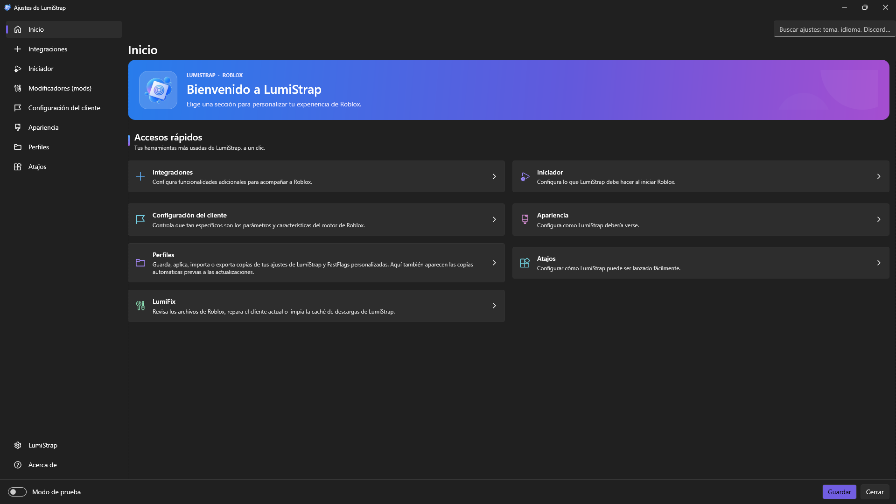
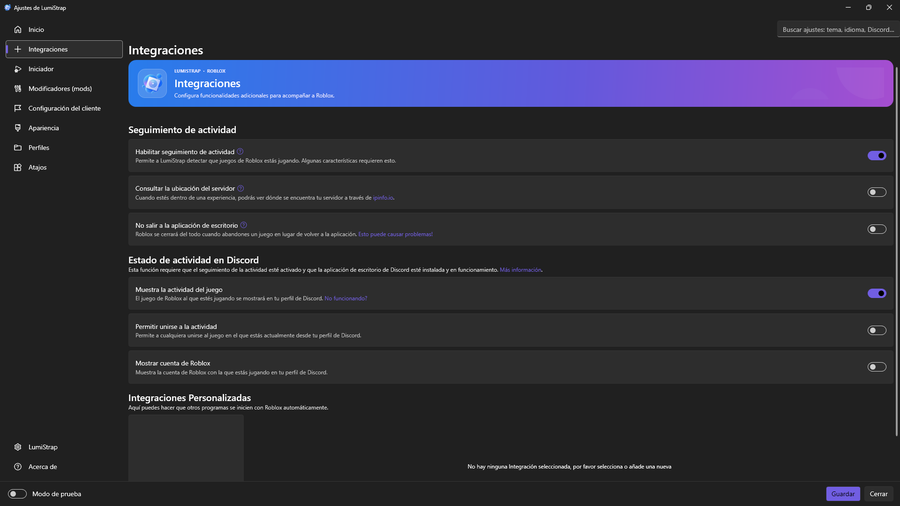
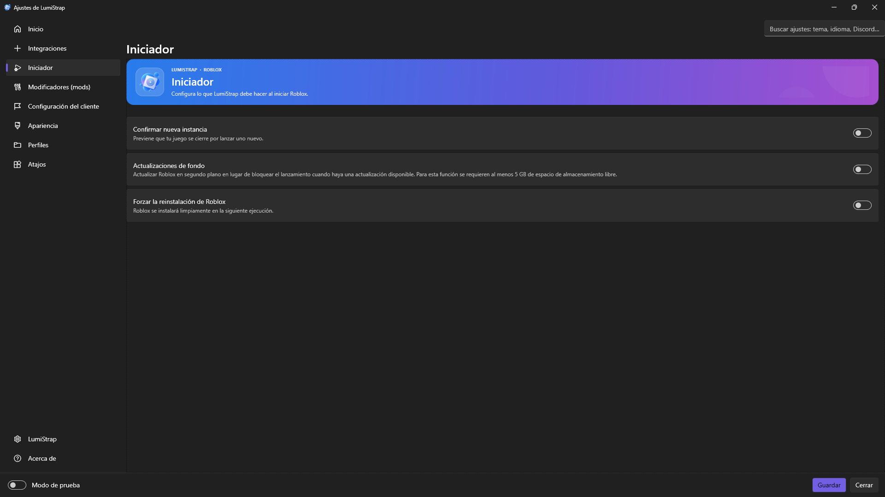
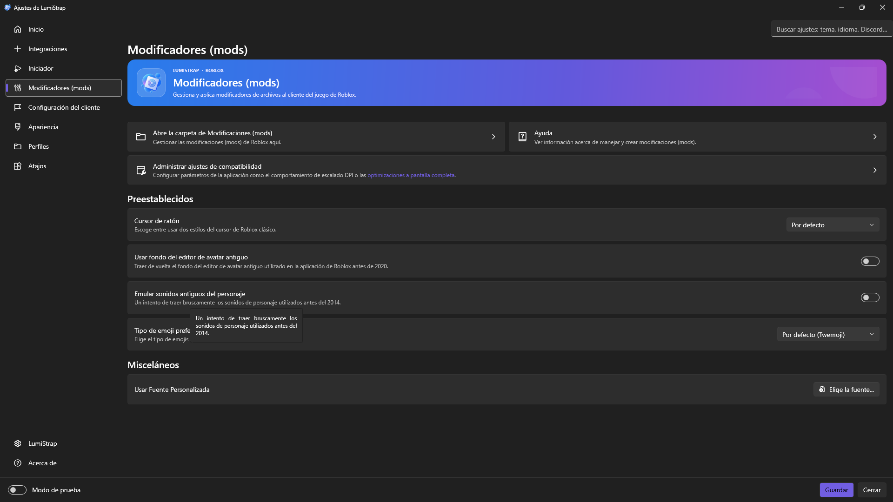
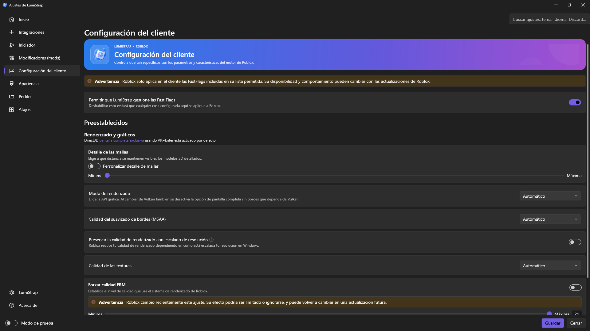
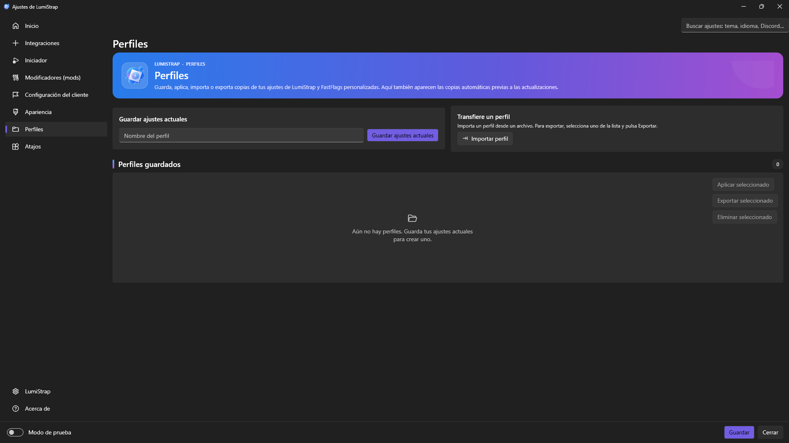
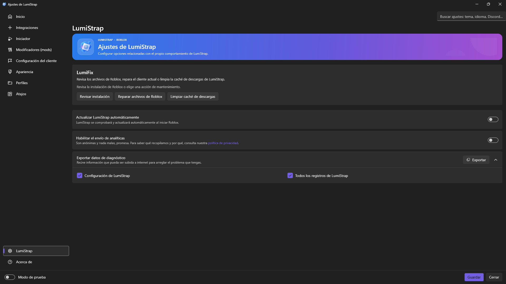
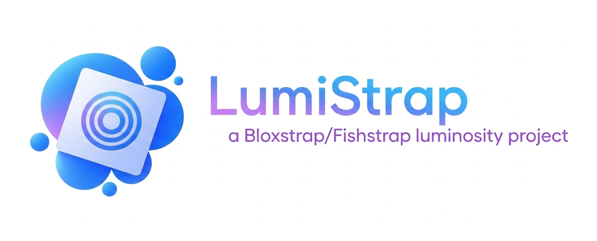

LumiFix
Revisa archivos del cliente, repara la instalación o limpia la caché. LumiStrap explica la acción y pide confirmación antes de hacer cambios.
LumiStrap reúne instalación, ajustes y herramientas útiles en una experiencia clara para Windows. Tú eliges qué cambiar y cuándo.

Funciones prácticas para configurar, mantener y entender tu experiencia con Roblox.
Revisa archivos del cliente, repara la instalación o limpia la caché. LumiStrap explica la acción y pide confirmación antes de hacer cambios.
Guarda y cambia entre tus ajustes y FastFlags personalizadas sin volver a configurarlo todo cada vez.
Consulta los datos disponibles de la experiencia y del servidor, y copia la información que quieras compartir.
Elige renderizado automático, Direct3D 11 o Vulkan; ajusta detalle de mallas y calidad FRM.
Mira el progreso y la velocidad. Si una descarga falla, puedes cancelarla o intentar de nuevo.
Revisa las novedades antes de actualizar, pospón la actualización y conserva copias recientes de tu configuración.
Explora capturas reales de las secciones principales de LumiStrap 0.1.4. Selecciona una imagen para verla en tamaño completo.






Antes de instalar una versión nueva, LumiStrap te muestra qué incluye y guarda una copia de tus ajustes para que puedas volver a ellos.
LumiStrap es un fork comunitario independiente de Bloxstrap. Conserva su licencia MIT y desarrolla su propia identidad y herramientas.

Descarga el instalador más reciente desde GitHub Releases para Windows.
Ir a la descarga